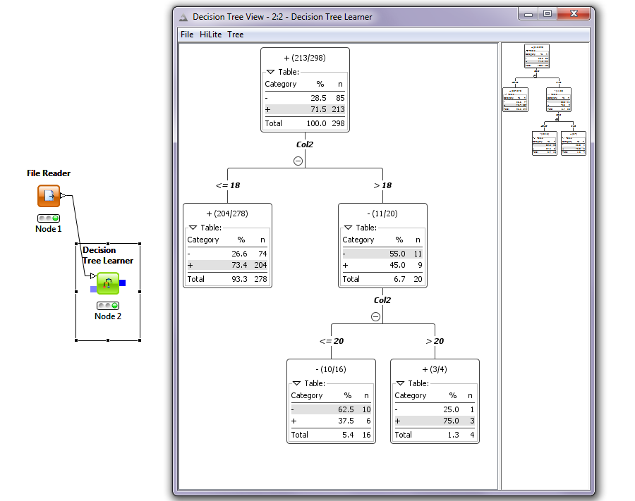
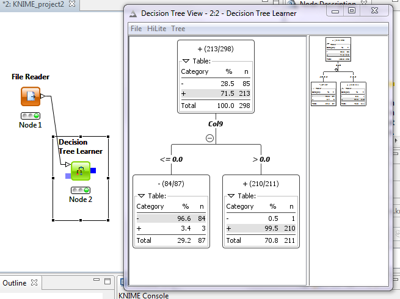

To begin trying to determine what makes a person a winner or a loser I am just looking at the data and seeing if I notice any patterns. Since that has failed I will start by generating features. Other things of note there are 213 winners(+) and 85 losers(-). The features I am generating currently are: total length of the namenumber of words in name (John Smith = 2, John H Smith = 3) To illustrate the process I will be using I will stop feature generation and run the new data set through a decision tree learner in Knime.
As you can see I did not find a feature that split the data well at all. All the splits are impure and most of them close to 50/50 mixes. Assuming that I had found the feature/s that fit the data set I would ideally see that the tree had made a single definitive split. In class we learned that it should be about 98% accurate so I will keep creating features until I see a split of close to that accuracy. Creating some more features now:
After creating these additional features I stopped and reran it in Knime through the decision tree learner node. It produced the results I was looking for.
As you can see the feature that allows the tree to only need one split is col9 which is the "binary" value of 0 for has a consonant as the second letter or 1 if it has a vowel. The purity of the leaf nodes lets you know that the split is about as good as it can get.
Winner and Losers CSV